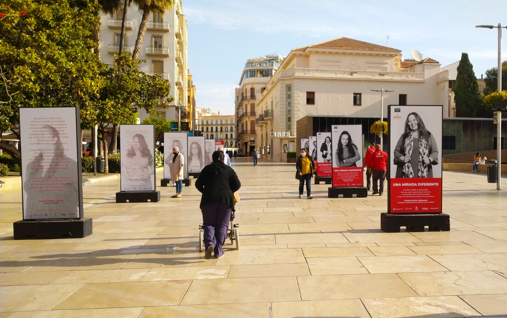
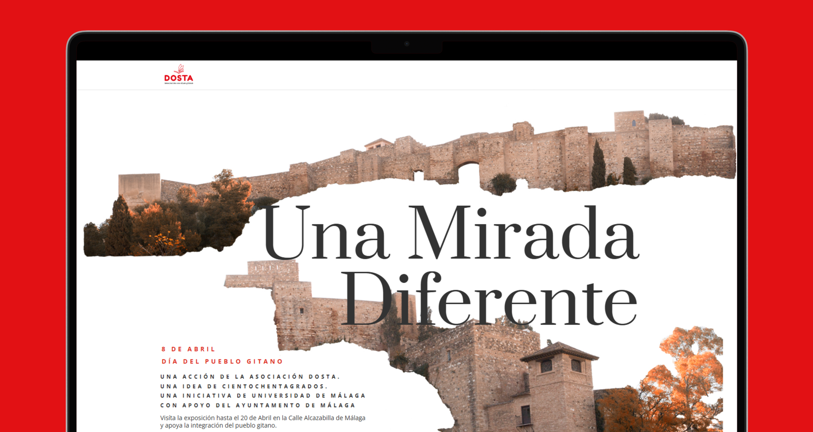
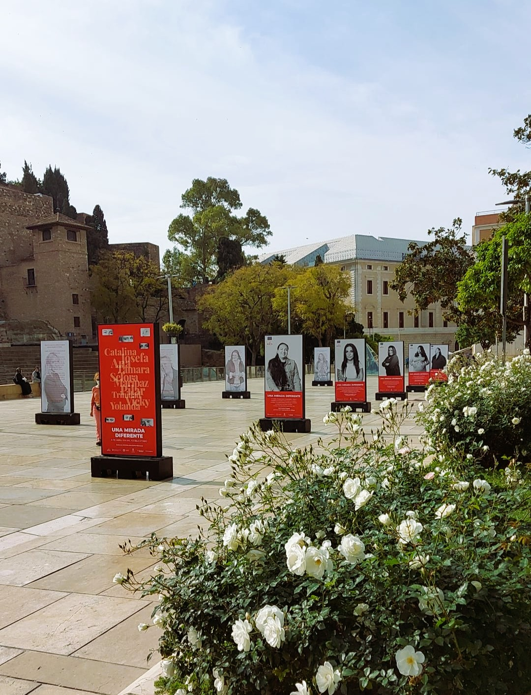
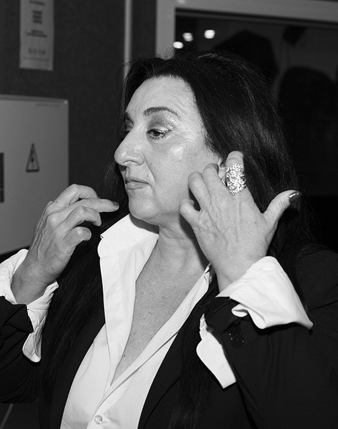
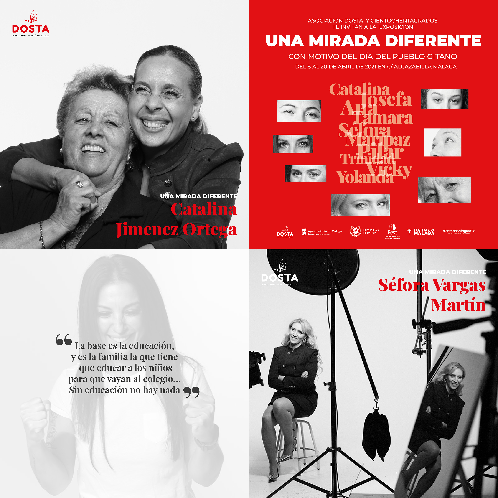

Una mirada diferente
- Formato físico
- Web Design
- Photography
- Graphic Design
During my time at the creative agency cientochentagrados, I had the opportunity to take part in "Una mirada diferente", a project developed in collaboration with Asociación Dosta to raise awareness of the work they do with Roma women.

The exhibition was inaugurated on April 8, 2021, along Calle Alcazabilla in Málaga, in front of the Roman Theatre. It featured ten portraits of Roma women, each accompanied by a short account of their lives and their determination to overcome challenges.

I was responsible for designing the project's event website, creating a digital space to present the initiative and share the stories behind the exhibition.


I also designed the street displays that made up the physical exhibition. Working across both digital and physical formats allowed me to translate the project's message into a consistent visual identity and bring these stories into the public space of Málaga.
